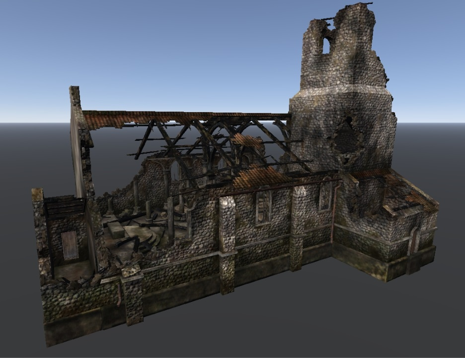

rendinst_layered
Overview
This shader is used for objects where we want to apply multiple material textures (e.g., brick and stucco tiles that are stored in different textures).
It can work with both tiles and unique textures. However, its primary purpose is for using tiles – it allows objects to be created without visible tiling, without the need for unique textures.
The shader uses the following types of textures:
UV1: Global normal map – the normal map for the entire object.
UV3: Details (detail textures) with normal maps and speculars – 2 tiling material textures.
UV2: Overlay map – applies effects of leaks/wear and tear to the unwrapped parts of objects, over the detail textures (tiles).
UV2: Exclusion mask – globally indicates where certain materials should appear on the object.
UV2: Blending mask – allows to randomize the blending of detail textures with the exclusion mask across the model, resulting in diverse appearances of the object using the same textures.
Let’s take a closer look.
Textures
Texture Assignment
For more details, see here.
Global Normal Map
This is straightforward. For most simple objects (fences, bollards, sometimes houses), a standard normal map from our libraries is used. For more complex objects, unique normal maps are created.
Their main purpose is to smooth out edges and chamfers. Since the objects themselves will be covered with material tiles (which contain their own normal maps), it’s important to achieve smoothing on the global normal map for those aspects that the tile normal maps cannot smooth out.
Important
Do not create the texture details of the object’s materials on this texture. Only smooth out seams, worn edges, etc.
Without a global normal map |
With a normal map showing chamfers |
|---|
{kind=link}
{kind=link}
The global normal map uses UV1. No other texture uses this UV channel.
Detail Textures (Details)
Let’s illustrate the concept using a brick house covered with stucco.
There are always two details!
Detail1 represents the material the object is made of. For instance, if the house wall is made of bricks, then Detail1 would be bricks.
Detail2 represents the material covering the object (such as moss on a tree or dirt on a cobblestone). For the house wall covered in stucco, Detail2 would be the stucco.
In this example, we use modern_brick_brown_dirt_d.tif and
stucco_new_d.tif, along with their respective normal maps, which contain
corresponding specular maps in their alpha channels.
1st map - Dirty Brickwork |
2nd map - Fresh Stucco |
|---|

{kind=link}
In general, the process is straightforward, with one exception – we need to blend these textures automatically on the model. To achieve this, we use the alpha channel of the diffuse maps, which contains heightmaps: the lighter the pixel, the “heavier” it is. The material with the higher heightmap at any given point will dominate in that texel.
{kind=link}
{kind=link}
By blending these two heightmaps in the shader, we achieve a non-uniform texture appearance: in some areas, the brickwork is visible because its heightmap is higher, while in others, the stucco dominates. For example:
{kind=link}
What happens if we modify these heightmaps? Suppose we want the stucco to cover the entire brick surface completely. To do this, we need to eliminate all the light pixels in the brick’s heightmap, as these are the areas where the brick shows through the stucco.
Making the heightmap entirely black: |
Results in: |
|---|
{kind=link}
{kind=link}
Important
Of course, this approach isn’t advisable – this was merely a demonstration of how heightmaps work. These maps are essential for creating a seamless, non-repeating overlay of stucco on top of the bricks.
Details use UV3 mapping, typically mapped using a 3x3x3 meter box without packing.
Important
Ensure that the geometry does not exceed 7 tiles in the UV layout; otherwise, artifacts may appear on consoles.
Overlay Map
The texture is named “overlay” because the shader applies it to the object using
a method similar to the “overlay” blend mode in Photoshop – multiply2X.
The purpose of the overlay is to give the object a “lived-in” appearance: stains, cracks, dirt, soot, etc.
Here is our house without the overlay (technically with a 50% gray overlay – completely disabling it would prevent the shader from functioning). We can see only the brick and stucco – the object looks plasticky: |
And here's the house with the overlay applied: |
|---|

{kind=link}
Universal Overlay
For this demonstration, we used a universal overlay –
buildings_overlay_tex_d.tif, which we apply to our houses and simpler
structures like fences. It looks like this:
{kind=link}
Conceptually, it’s divided into 16 cells (with indices starting from 0, not 1):
{kind=link}
Cells 0-1 are used to decorate the building’s interior materials (walls with wallpaper/stucco).
Note
As shown, these two cells contain four smaller cells each – ensure that the seams between these cells do not fall on a flat surface, or else a distinct vertical line will appear on the model! For example:
Cell 2 is used to decorate wooden roof trim, similar to this:
It should be mapped as follows:
Either using a horizontal plane of 55x55 meters. Vertical supports should be mapped separately in the vertical plane;
Or using box and flatten mapping.
Cells 3, 6, 7 are currently unused.
Cells 4-5 are used to decorate roofs:
Cell 4 is for sloped roofs;
Cell 5 is for flat roofs.
Cells 8-15 are used to decorate the building’s exterior.
{kind=link}
{kind=link}
In the example above, cell 11 was used. Here’s how it works:
{kind=link}
Important
All external surfaces of the building, except for the roof, should only be mapped to cell 8. The shader will automatically shift the mapping to cells 9-15. More on this in the shader settings.
Note
In the early stages of War Thunder’s development, universal overlays were widely used. However, as the project evolved, we transitioned to unique overlays. Consequently, the content of this section is now outdated. Despite this, universal overlays can still be employed, though they are better suited for smaller objects rather than larger structures like buildings.
Unique Overlay
The universal overlay was designed to automate visual variety in objects – by creating one house, you can give it up to eight different appearances without any additional work. However, this map is not suitable for unique objects, as it cannot emphasize the distinctive features that make an object more “alive”.
Let’s look at an example of a unique overlay:
{kind=link}
As you can see, the entire texture is dedicated to a unique UV layout, reflecting soot marks on walls at bullet impact sites, rotting wood (small details), moss-covered foundations, etc.
It was created for a partially ruined church:
{kind=link}
Exclusion Mask
This texture resides in the alpha channel of the overlay map and therefore uses the same UV2. Let’s examine it using the universal overlay’s alpha channel as an example.
{kind=link}
This is a black-and-white mask. It defines the global areas on the model where we want to preserve only the first detail or only the second.
Black pixels – only the first detail will remain.
White pixels – only the second detail will remain.
Intermediate grayscale values – adjust the global heightmaps of the two details.
Why is this necessary? Let’s see how the details mix with a 50% gray exclusion mask. (For clarity, we’ll set the overlay to the same 50% gray so it doesn’t interfere with the detail mixing.)
{kind=link}
Several issues are apparent:
The tiling pattern is fully readable. Even after applying the overlay, this might not be corrected, as the overlay cells (when using the universal overlay) have varying levels of “dirtiness.” For example, using cell 8 produces the following result:
{kind=link}
It’s clear that the tiling is still visible.
Detail2 (stucco) blends with Detail1 (bricks) uniformly and boringly across the entire wall area. This can be somewhat improved by using a dirtier overlay. For example, let’s try cell 11:
{kind=link}
Yes, it looks better. However, problem 1 remains – the cells are used automatically, and the mapping will inevitably shift to a less detailed cell.
The exclusion mask is designed to address these specific issues. It globally overrides the heightmaps of the details across the entire object mapped to it, causing the blending to be rough and uneven. This helps hide the tiling (it’s hard to notice when Detail2 covers different parts of Detail1) and eliminates uniform blending.
Let’s switch the exclusion mask from gray to the original.
{kind=link}
The result is clear – both issues are resolved. However, cell 8 is rather sparse for both the overlay and the exclusion mask.
{kind=link}
Let’s see what happens if we shift the UV2 mapping to cell 11. In the screenshots above, it worked with a gray exclusion mask. Now let’s see its full effect.
{kind=link}
{kind=link}
There is no visible tiling. The details blend randomly. The overlay adds even more detail.
The more varied the exclusion mask, the smoother the detail blending. The more gradients and fewer sharp transitions it contains, the smoother the boundaries between details.
Important
In summary, the exclusion mask controls where Detail1 (the object’s base material) is visible – where its pixels are black–and where Detail2 (the object’s covering) appears – where its pixels are white.
Where the pixels are gray, the details blend based on their heightmaps, taking into account the “grayness” of the exclusion mask:
If the mask is 50% gray, only the heightmaps are used.
If it is darker than 50%, the heightmap of Detail1 is stronger.
If it is lighter than 50%, the heightmap of Detail2 takes precedence.
Blending Mask
How It Works
The blending mask is the final texture we utilize. Let’s examine it using the
example of the brick_stucco_m.tif texture, which was applied to the house we
discussed earlier.
{kind=link}
What does it do? Essentially, it performs the same function as the exclusion mask:
Black areas reveal Detail1.
White areas reveal Detail2.
Gray areas blend the two details based on their heightmaps and the gray value of the blending mask.
Let’s recall how the house looked without a blending mask (in the earlier screenshots, it was filled with 50% gray).
{kind=link}
Now, let’s see how the house appears with the brick_stucco_m.tif blending
mask applied.
{kind=link}
The difference is subtle – the exclusion mask creates a more noticeable change. This is because, on UV2, our house occupies a single cell, which is quite insignificant in the context of the blending mask.
{kind=link}
So, why do we need a blending mask that seemingly duplicates the exclusion mask, but with less impact?
There are four key points to understand:
In reality, details are not blended solely by the exclusion mask.
Similarly, details are not blended solely by the blending mask.
The exclusion mask and blending mask are combined to create the final global blending mask, which dictates how the details are blended.
Note
These masks are combined using standard multiplication (not Photoshop’s Multiply mode).
Our
rendinst_layeredshader randomly offsets the blending mask (the local one we’re discussing) based on the position of the house on the map.
To summarize in simpler terms:
Place the house on the map, for instance, at the center.
The blending mask and exclusion mask combine to form the global blending mask.
Black areas reveal Detail1.
White areas reveal Detail2.
Intermediate gray values influence the blending of details based on their heightmaps.
Move the house slightly, and the blending mask and exclusion mask are multiplied again, creating a new global blending mask and altering how the details blend.
Here’s how it looks in practice:
Each movement triggers a reassembly of the global blending mask via multiplying the exclusion mask and the local blending mask, which results in the same object having a different appearance as it is repositioned.
This is the core function of the blending mask. We cannot offset the exclusion mask since it contains a unique mapping of detail blending (even within the cells). The blending mask is designed precisely for this purpose.
Specifics of Using the Blending Mask
We used the brick_stucco_m.tif as our example. The name itself indicates that
it represents stucco over brick, meaning it’s intended for a specific type of
detail blending – Detail2 (stucco) is layered over Detail1 (brick) with clear
boundaries.
Let’s look at a real brick house with stucco, such as this one:
{kind=link}
The concept becomes clear – stucco peels off in sheets, revealing the underlying wall material.
How did we achieve this effect on our house? The current blending mask has sharp transitions between black and white, with almost no gradients. This means we either see the brick (black areas) or the stucco (white areas).
But what if we want to create a stone wall with moss growing between the stones?
We’d use a stone texture (medieval_brick_d.tif) and a moss texture
(moss_different_d.tif). Let’s examine these textures and their heightmaps.
Stone Masonry: Its heightmap clearly indicates that any Detail2 should only appear between the stones. Recall that the heightmap function – the lighter the area, the stronger the effect.
Moss: Its heightmap suggests that it doesn’t matter where it grows. It’s uniformly gray, meaning it will be overpowered by almost any other detail’s heightmap.
{kind=link}
{kind=link}
Let’s see how these details blend with the current blending mask. Remember, the moss heightmap will likely be overridden by the stone heightmap, so the moss should only appear between the stones – exactly what we want.
However, what we get is moss applied over the entire wall surface.
{kind=link}
Why did this happen?
Because our blending mask is unsuitable. As stated earlier:
“What does the blending mask do? It functions exactly like the exclusion mask. Black areas reveal Detail1, white areas reveal Detail2, and gray areas blend the two details according to their heightmaps and the gray value of the blending mask.”
“The current blending mask has sharp transitions between black and white, with almost no gradients. This means we either see the brick (black) or the stucco (white).”
Our brick_stucco_m.tif blending mask has overridden the detail heightmaps and
distributed them as it saw fit.
What to do in such cases? Change the blending mask.
The approach is straightforward:
Ensure that the detail heightmaps are not overridden.
Detail heightmaps are not overridden by gray.
We need smooth transitions between the details.
Conclusion: We need a blending mask with lots of gray and few sharp boundaries – everything should be gradient-based.
Let’s try gypsum_m.tif. It’s not a perfect mask, but it’s better than the
previous one. We can see that it contains a lot of gray, with minimal
black/white areas and many gradients. There are some patches, but they’re small
and sparse.
{kind=link}
Now, let’s see how it performs.
{kind=link}
The moss remains in some places, but mostly it has receded to the gaps between the stones. The remaining local patches can be removed if needed, but that would require additional methods.
Remember that these masks will be multiplied, and the final appearance will continue to evolve:
Conclusion
A concise summary of how the shader uses textures:
Two details are blended based on their heightmaps (through alpha test).
The exclusion and blending masks combine to create the final global blending mask for detail blending (using standard multiplication, not Photoshop’s Multiply mode).
This raises a question: Why not blend the details directly using this mask? Why do we need detail heightmaps as well?
Because the blending mask has a large texel size, blending directly would result in blurry textures. Using the detail heightmaps allows for a sharper blend.
When the heightmaps are combined with the blended masks, the result is that within the large texel of the global blending mask (which covers the entire building), several smaller texels of the local blending mask are nested. These smaller texels are where the detail heightmaps interact. This process ensures that the image remains sharp, as the local blending mask allows for finer detail within each texel of the global mask.
Next, a normal map and an overlay map are applied on top of the blended details. These maps add texture and additional detail to the surface, enhancing the visual complexity of the material.
Finally, when the object using this shader is repositioned, the blending mask is offset. This offsetting causes the global blending mask to change, which in turn alters how the details are mixed. As a result, the object’s appearance shifts as the blending of the details adjusts to the new position.
Shader Setup
General Shader Parameters
When setting up the shader, the initial view displays the basic parameters, which can be further expanded for customization.
{kind=link}
Two key points to note:
{kind=link}
{kind=link}
Texture Assignment
Textures are assigned to slots in the following order:
Slot 1 – Overlay
Slot 2 – Blending Mask
Slot 3 – Normal Map
Slot 4 – Detail1 Diffuse
Slot 5 – Detail1 Normal Map
Slot 6 – Detail2 Diffuse
Slot 7 – Detail2 Normal Map
Shader Parameters
The shader offers a range of parameters for customization:
atlas_first_tile/atlas_last_tile/atlas_tile_u/atlas_tile_v: Group of parameters that manages the offset of uv-mapping on the universal overlay.detail_tile_u/v: Controls the tiling of details.detail_scroll_u/v: Adjusts the scrolling of details.mask_gamma_start/end: Configures the transparency of Detail1 through Detail2.mask_tile_u/v: Controls the tiling of the blending mask.mask_scroll_u/v: Adjusts the scrolling of the blending mask.draw_grass: Enables grass growth on the object.detail2_colored: Allows to colorize Detail2 in the Dagor Editor tool (an outdated feature rarely used).top_projection: Group of parameters that allows to project Detail2 above the Detail1 using global and local normals.top_projection_fromtop_projection_totop_projection_detail2_modulateuse_painting: Group of parameters used for colorizing of details.painting_linepaint1stdetaildetail2_combined_normal: Blends details’ normal maps.micro_detail_layer1: Group of parameters for microdetails.micro_detail_layer2micro_detail_layer1_uv_scalemicro_detail_layer2_uv_scalematerial_shadow_influence: Controls shadow strength from the details.material_shadow_scale: Adjusts the shadow size from the details.
Offset of UV-mapping on the Universal Overlay
To use the universal overlay effectively, remember the rule stated earlier:
Important
All exterior surfaces of the building, except the roof, should be mapped to cell 8. The shader will automatically shift the mapping across cells 9-15.
The shader and universal overlay/mask are designed to automate content variation. By mapping the exterior of the building to cell 8, the shader will automatically shift the mapping to other cells, creating varied appearances without manual intervention.
For example, if the walls and exterior parts of the house are mapped to cell 8:
{kind=link}
The shader will automatically shift the mapping to cell 9:
However, this automatic shifting requires specific parameters to be set. The universal overlay cells are as follows:

cells 0-1: For internal materials (walls with wallpaper/stucco).
cell 2: For decorative wooden roof elements.
cells 3, 6, 7: Currently unused.
cells 4-5: For roof decoration: cell 4 for sloped roofs, cell 5 for flat roofs.
cells 8-15: For decorating external parts of buildings.
To enable the shader to recognize and use these cells, the following parameters must be set:
atlas_first_tile: Start cell number for the mapping jump (usually cell 8).atlas_last_tile: End cell number for the mapping jump (usually cell 15).atlas_tile_u: Horizontal jump size in fractions of the texture width (e.g., 0.5).atlas_tile_v: Vertical jump size in fractions of the texture height (e.g., 0.125).
For the universal overlay to work correctly, you need to add these parameters using the Add button and set their values as follows:
atlas_first_tile = 8atlas_last_tile = 15atlas_tile_u = 0.5atlas_tile_v = 0.125
If these parameters are not set, the overlay will not shift correctly:
In some cases, you may want to limit the use of certain cells. For example, wooden walls may not look good with stucco cracks and stains.
{kind=link}
In such cases, set atlas_last_tile = 10 to limit the jump to cells 8-10,
which are more neutral:
Detail Tiling Settings
The tiling of details is controlled by the parameters:
detail1/2_tile_u: Adjusts the horizontal tiling of Detail1/2.detail1/2_tile_v: Adjusts the vertical tiling of Detail1/2.
By default, if these parameters are not set, they are assumed to be 1.
These settings are useful when:
The texels of the detail textures do not match, or
You want to adjust the display size of one detail relative to another.
Here’s an example of a house corner with the brick detail tiling set to 1 and
the stucco detail tiling set to 0.5:
{kind=link}
The stucco appears blurry because its texel size is twice as large as the brick. Comparing the textures:
Modern Brick Brown Dirt (1024x1024) |
Stucco New (512x512) |
|---|


Increasing the stucco tile by 2x for both axes corrects this:
{kind=link}
However, you might want a more refined stucco finish without large, clear holes.
Setting the stucco tile to 2.54 achieves this:
{kind=link}
The result is a house with a more refined stucco texture. However, be cautious, as extreme mismatches in texel sizes can lead to visual inconsistencies, particularly on less detailed surfaces like roofs.
For instance, moss with a tile of 5.35 on a roof with a tile of 1 shows a
noticeable mismatch:
{kind=link}
To avoid such issues, always check texture sizes and the final result, ensuring there’s no visible mismatch.
Important
It’s better to use non-integer tiling parameters (e.g., 1.54 instead of 1.5,
2.35 instead of 2). This reduces the visibility of the tiling pattern.
Disabling Tiling (detail1/2_scroll_u=-1)
Important
Use just detail1/2_scroll_u to disable detail scaling. Don’t use scroll_v,
because it’s incorrect and leads to visual bugs.
When scaling an object, tiling is often automatically applied based on the object’s size, which can cause unwanted effects on unique UV mappings. For instance, scaling a stone object 100 times can make the details tile 100 times more frequent.
Example:
100% scale |
1000% scale |
|---|
{kind=link}
{kind=link}
The technology is useful, because it saves us texel when scaling objects. However, a problem arises when we use such a shader on objects with unique UV. For example, we take a bunch of tires and make them “dusty”. Detail1 mapping is scaled when we scale the model of tires. But uv-mapping for this model is unique
we get visual bug.
Example:
100% scale: |
200% scale: |
|---|
{kind=link}
{kind=link}
To prevent this, set detail1_scroll_u=-1 to disable tiling for a specific
detail when scaling is not desired.
200% scale with detail1_scroll_u=-1 |
|---|
{kind=link}
Configuring Detail Offset
Control the horizontal and vertical offsets of details using:
detail1/2_scroll_u– Horizontal offset.detail1/2_scroll_v– Vertical offset.
Default values are 1. Use these settings when precise alignment of details is
necessary, such as aligning bricks in a wall section.
{kind=link}
{kind=link}
{kind=link}
To do this, we set the brick parameters detail1_scroll_u and
detail1_scroll_v to 0. What happens if we don’t set these parameters? For
example, detail1_scroll_u:
{kind=link}
We ended up with horizontal shifts in the texture, resulting in uneven seams: in some places, the bricks vary in thickness, while in others, they appear unusually short.
It’s easy to imagine what happens if detail1_scroll_v=0 is not set – complete
misalignment of the fence edges.”
{kind=link}
Important
Don’t set these parameters without a good reason. They limit the number of variations you can achieve with your objects, so only use them when absolutely necessary.
Configuring of Details Blending
Details are blended with the final blending mask, that represents a result of combining of several masks (details’ heightmaps, exclusion mask, blending mask).
We can modify this final blending mask by raising it to the needed power - we call it Gamma.
There’re 2 parameters:
mask_gamma_start– smallest needed gamma value.mask_gamma_end– largest needed gamma value.
We specify them both and Dagor chooses final gamma value between them
randomly. Our final blending mask is raised to the power of this gamma value.
Imagine final blending mask as a set of values – not colors. Black is 0. White
is 1. Nearly white is, for instance, 0.95.
Raise 0.95 to the power of 2 and you’ll get 0.9. But raise 0.95 to the
power of 0.2 and you’ll get 0.9898.
It means that the smaller gamma values you specify – the brighter final blending mask you get. And more of Detail2 will be seen.
On the contrary the larger gamma values you specify – the darker final blending mask you get. And more of detail1 will be seen.
For instance, we want to reduce the visibility of the stucco on this house.
{kind=link}
We assign the blend mask gypsum_m as it is the most “gentle” and gray, and we
get the following result:
{kind=link}
This is not sufficient. Let’s set the following parameter values:
mask_gamma_start = 4mask_gamma_end = 8
{kind=link}
Configuring Blend Mask Tiling
This is controlled by the following parameters:
mask_tile_u– horizontal tiling of the blend mask;mask_tile_v– vertical tiling of the blend mask.
If these parameters are not set, they default to 1.
These parameters are usually needed to add variety to the appearance of an
object. For example, here is our fence with the gypsum_m mask tiling set to
1.
{kind=link}
We want to reduce the size of the moss patches but increase their frequency.
Let’s set the mask tiling to 8.75.
{kind=link}
Unlike detail textures, the blend mask can be tiled non-proportionally. For
instance, we can keep the vertical tiling at 1 while setting the horizontal
tiling to 8.75.
{kind=link}
There will be no stretching of textures – we’ve simply created narrower and taller blend areas, as the mask tiles nearly 9 times more frequently horizontally than vertically. This technique can be useful when you need to create “leaks” using the Detail2 layer.
Configuring Blend Mask Offset
This is controlled by the following parameters:
mask_scroll_u– horizontal offset of the mask;mask_scroll_v– vertical offset of the mask.
By default (when not added to the material), these values are set to 1.
In the shader textures documentation, we mentioned that the blend mask offsets each time the object’s position in space changes. Let’s revisit how this looks with the overlay removed:
These parameters increase the offset value, allowing for more varied blending of
detail layers. Let’s set these values to 0.5.
As you can see, the changes between blends became
sometimes more visible,
sometimes less visible.
This is because the offsets of our blend mask became smaller. And uv-mapping stays more time on areas that it used to jump over with offset=1.
We rarely use this parameter, because it’s much easier to random blending change with more varied blending mask.
Important
If you need to disable blend mask jumps, use the parameter mask_tile_u=-1.
Not the scroll, but the tiling, specifically mask_tile_u set to -1.
Growing Grass on an Object
If you need to “grow” grass on a rendinst geometry, set the draw_grass
parameter in its material to a value of 1. It’s important to apply this on a
nearly horizontal surface to prevent grass from growing on walls.
Coloring the Detail2 in the daEditor (Deprecated)
In the initial version of the coloring process, the color range was specified directly in the daEditor. Only the Detail2 (the “upper” one) was colored, using a simple multiply operation. This required careful selection of colors to avoid over-saturation.
The process was as follows:
The parameter
detail2_coloredwas set to1.In the daEditor, a color gradient was applied set in the Properties > Textures > Rendinst 2-nd detail color section.
{kind=link}
{kind=link}
Top Projection - Projecting the Detail2 using Local and Global Normals
There are scenarios where you need to add snow, sand, or moss to an object. For
this, the top_projection feature is used. It projects the Detail2 layer on top
of the Detail1 at a specified angle. For instance, on a stone surface, you can
project snow on top of the stone detail.
The parameters for this feature are:
top_projection– 0/1 (off/on);top_projection_from– the angle at which the projected detail starts to appear (at a minimal amount);top_projection_to– the angle at which the projected detail fully covers the object;top_projection_detail2_modulate– the intensity of the projection’s effect on the Detail2 layer.
The function takes into account all normals:
Global geometry normals.
Global normal map normals.
Local detail layer normals.
The function also takes into consideration the masks:
Exclusion mask (overlay alpha) – if set to black, the Detail2 layer will not appear.
Blend mask.
However, it does NOT take into account the heightmap of the Detail1 layer, as it could be very bright (e.g., stucco). If it were considered, projection would be difficult.
This is a procedural function – rotate the object as you like, and the Detail2 layer will cover it according to the specified rules, from the appropriate side.
Let’s examine how these parameters work.
top_projection
This parameter has values 0 and 1 (off/on).
top_projection_from
Specifies the angle at which the projected detail begins to appear (at a minimal
amount). The angle is specified not in degrees but in the sine of the angle. For
example, if you want the snow to start at 45 degrees, take sin(45) = 0.7 and
enter 0.7 as the value.
Parameter value = 0.7 |
Parameter value = 0.1 |
|---|
{kind=link}
{kind=link}
top_projection_to
Specifies the angle at which the projected detail fully covers the object. Again, this is specified in the sine of the angle. The difference is less noticeable than with the starting parameter – it’s more apparent on flatter objects than on steep ones.
Parameter value = 0.5 |
Parameter value = 1 |
|---|
{kind=link}
{kind=link}
top_projection_detail2_modulate
Specifies the intensity of the overlay’s effect on the second detail layer. If
you want pure white snow, set the value to 0. If you want it to appear dirtier,
increase the parameter up to 1.
Parameter value = 0.2 |
Parameter value = 1 |
|---|
{kind=link}
{kind=link}
In this example, the difference is not very noticeable because the overlay itself is grayish.
Blending with Landscape Heightmap
To improve the visual integration of objects with the landscape, you can use special parameters that allow detail layers of terrain and assets to blend based on the intersection mask of the asset with the heightmap. This is particularly useful for piles, rocks, cliffs, and similar objects.
Important
This is a computationally expensive technique, so use it sparingly.
Examples:
Without blend |
With blend |
|---|
{kind=link}

Blending parameters:
enable_hmap_blend=1(default:0) – Enables/disables heightmap blending.hmap_blend_height=0.1(default:0.1) – Height of the blending.ri_hmap_min_blend_angle=40– Angle where landscape blending starts to fade out. (90 degrees is upward).ri_hmap_max_blend_angle=50– Angle where landscape blending completely fades out. (90 degrees is upward).ri_hmap_blend_angle_vertex_normal_amount=0.75– Floating value between texel (0) or vertex (1) normals as dominant for the blend mask. The higher the vertex normal dominance, the lower the chance of the projection appearing on triangles with a vertical normal, even if the texel normal is directed upward.ri_hmap_blend_check_holes=1– Cuts the blend band at the intersection with heightmap holes created usingground_hole:gameobj. This parameter should be added only for rocks (or other objects that intersect between the heightmap and underground space), as unnecessary checks can significantly impact performance.
GPU objects and grass now correctly generate on objects with Heightmap Blending.
Global Shader Variables
These are shader parameters initialized in gamedata/.../scene.blk2 within the
shader_vars__vars:object block:
ri_hmap_blend_sharpness=8.0(default:8.0) – The higher the value, the sharper the blend boundary.ri_hmap_perlin_tex_scale=0.25(default:0.25) – Perlin noise tiling multiplier.ri_hmap_min_height=0.5(default:0.5) – Minimum blend height, overriding the shader parameter if necessary.
Examples:
ri_hmap_blend_sharpness=2 |
ri_hmap_blend_sharpness=4 |
ri_hmap_blend_sharpness=8 |
|---|
{kind=link}
{kind=link}
{kind=link}
ri_hmap_perlin_tex_scale=0.01 |
ri_hmap_perlin_tex_scale=0.25 |
ri_hmap_perlin_tex_scale=4 |
|---|
{kind=link}
{kind=link}
{kind=link}
ri_hmap_min_height=0.1 |
ri_hmap_min_height=0.5 |
ri_hmap_min_height=3 |
|---|
{kind=link}
{kind=link}
{kind=link}
Static Shader Variables
These are additional shader parameters that adjust the influence of global shader variables for a specific asset:
ri_hmap_blend_sharpness_mul=1.0– Multiplier forri_hmap_blend_sharpness.ri_hmap_perlin_tex_scale_mul=1.0– Multiplier forri_hmap_perlin_tex_scale.ri_hmap_min_height_mul=1.0– Multiplier forri_hmap_min_height.
Note
Global and Static Shader Variables for ri_hmap
Global shader variables affect all assets on the level with initialized blending.
If global shader variables are not initialized in
scene.blk, the default values listed above are applied.Static shader variables are multipliers of the global shader variables, initialized in
scene.blk, for a specific asset.
For example, if the global shader variable is set to:
ri_hmap_blend_sharpness=8.0
and the static shader variable for the asset example.dag is:
ri_hmap_blend_sharpness_mul=0.5
then the final blend_sharpness value for the asset example.dag on the level
will be calculated as:
blend_sharpness = ri_hmap_blend_sharpness * ri_hmap_blend_sharpness_mul = 8.0 * 0.5 = 4
```{important}
The heightmap blending shader also works in
[*daEditor*](../../dagor-tools/daeditor/daeditor/daeditor.md), but since global
shader variables for the editor are initialized separately and not pulled from
scene.blk, keep in mind that if you choose global shader variable values in
scene.blk that differ from the defaults, the editor will display something
different from what you’ll see in the game.
Instructions on how to configure global shader variables for the editor will be
added to the article later.
```
Procedural Detail Layer Coloring
You can procedurally color any detail layer (only one at a time) using a palette.
The palette is called paint_colors.dds and is located at
...\develop\assets\textures\colorize_textures.
{kind=link}
It consists of a set of single-pixel rows, each containing between 1 and 64 colors. In the coloring parameters, you specify a particular row for a specific object (from 0 to the last row in the texture). As the object moves across the map, each step will randomly shift the pixel within the selected coloring row. If multiple colors are specified, the object will be procedurally recolored.
The coloring is applied based on the diffuse alpha (either the heightmap of the detail layer or simply a coloring mask for a unique texture).
Shader parameters:
use_painting– Controls whether to color detail layers from the palette defined in the scene’s shader variables.1– color,0– don’t color;values between
0.(01)and0.(9)– partial coloring (multiplier).
Coloring is based on the diffuse alpha, multiplied by the
use_paintingvalue. Values between1.(0)1and1.(9)also affect the coloring strength from 0.0 to 1.0 but disable random pixel selection from the coloring row when the object changes height – useful for consistently coloring modular skyscrapers, for example.painting_line– The coloring row (from 0 to the last row in the texture).paint1stdetail– Default value is1(colors the first detail layer). If you need to color the Detail2 layer, set the value to-1.
Normal Blending
There are situations where you need to reveal the underlying texture of the
Detail1 layer (such as metal texture) through the Detail2 layer (such as paint).
This is achieved using the detail2_combined_normal parameter, which has two
possible values: 0 (disabled) or 1 (enabled).
Parameter value = 1 |
Parameter value = 0 |
|---|
{kind=link}
{kind=link}
Microdetails
See also
For information on microdetails, see Microdetails on Assets.
Material Shadows
Material shadows are generated based on the heightmap of detail layers. The following parameters are available:
material_shadow_influence=0.5, 1, 0, 0– Controls the “intensity” of shadows. Each component affects the corresponding detail layer. For instance,0.5affects the Detail1 layer, and1affects the Detail2 layer. The third and fourth components are not used in therendinst_layeredshader since it only supports two detail layers. However, in therendinst_perlin_layeredshader, the first three components are used, as it supports three detail layers.material_shadow_scale=2– Acts as a multiplier for the “size” of the shadows. This applies to the shadows of all detail layers, as calculating it separately for each layer would be computationally expensive.
Example:

Shader Configuration Errors
This occurs when you forget to set all the necessary values. For example, you
might add the parameter detail2_tile_u=2.54 but forget to include
detail2_tile_v=2.54.
{kind=link}
At first glance, this might seem insignificant (and this is often where the inspection ends, unfortunately). However, upon closer examination:
{kind=link}
Such subtle issues are common and often go unnoticed until you closely inspect
the settings. Sometimes, for instance, values like detail2_tile_u=2.3 and
detail2_tile_v=2.4 are set, which only becomes noticeable upon careful
examination.
Sloped Roof
Let’s recall what a sloped roof tile looks like and how it reflects details:
{kind=link}
Remember that each overlay tile contains a specifically designed blending mask.
{kind=link}
Here’s how this mask works with a house roof:
{kind=link}
What happens if we leave the tiling parameters on the roof material?
First, the roof will never land on the correct roof cell because
atlas_first_tile = 8. Second, you’ll end up with completely arbitrary overlays
and blending.
For example:
{kind=link}
As you can see, the logic of material blending on the roof is completely lost. The materials blend across the entire surface as if they were on walls, not a roof. Now, let’s see how the overlay appears on the roof.
The result is completely abstract decorations, which have nothing to do with the intended metal sheets of the roof. This is precisely why the roof cell was designed to be universal and neutral.
Flat Roof
Let’s recall how the flat roof cell looks and what it represents:
{kind=link}
Here’s its exclusion mask:
{kind=link}
In this case, there’s no need to show examples of incorrect atlas usage because there simply aren’t any other cells that can fulfill the same function.
Wooden Roof Trim
Recall that the wooden trim has its own designated - cell 2:
{kind=link}
When mapped correctly, the wooden planks look like this (Detail2 shows charred wood):

What happens when you apply overlay tiling parameters here?
The mapping jumps to cell 8, and instead of smooth blending and a bronzed appearance, you get these bright planks smeared with tar:
{kind=link}